Building the Tardis Desk
An interactive standing desk for working from home
Background
A couple of years ago I got interested in the idea of building a standing desk for those times when I was working from home. I was then using a bog-standard sitting desk and had moved my office around the house as DIY projects and family demands dictated.
I had started to measure things up and sketched out a design for the desk frame when coincidentally yet another redecoration project made an old wardrobe redundant. As I started emptying it and thought about smashing it to bits, the carcass suddenly seemed to me to be about the same dimensions as the desk I had planned.
Never being one to waste money or wood, I fitted some extra shelving inside the wardrobe, installed my PC and a couple of monitors and hey presto, a functional standing desk practically for free.
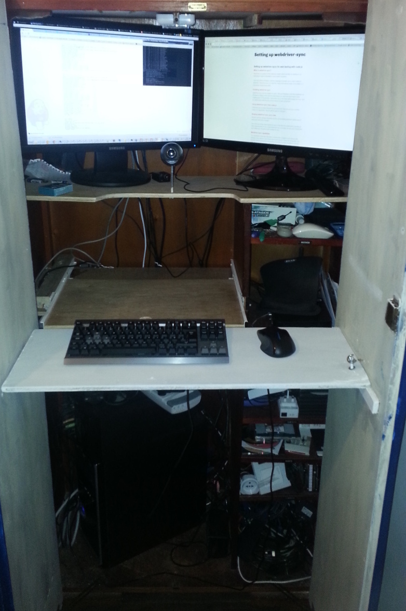Becoming a Tardis
Functional but boring, so I began to think about giving it a lick of paint. I decided to pick a theme based on a possibly the most famous standing desk of all time - the Tardis console.
I had to chisel off the faux-deco panels to get 2 flat doors, then made some framing panels from MDF, pinned and glued them into place and gave the whole thing a couple of coats of dark blue paint. I wasn't too fussed about the quality of the finish as I wanted it to look a bit weather-beaten.
I masked off the top panel in each door to let the white undercoat show through for the top windows(?). A black POLICE BOX roof sign and the white FOR USE OF PUBLIC door signs were printed off and the Tardis was complete. Even more complete that Xmas when I was gifted a revolving police light.
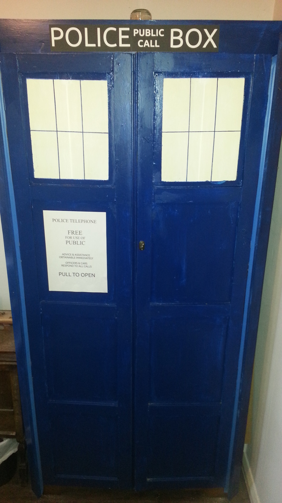I decorated the insides of the doors with some spacey vinyl from a old conference display that was being thrown out at work and the guts of some dead hard drives and scrap 80s computers from eBay.
Becoming Interactive
So the decoration was done and gave me a little lift every time I walked past the spare room and saw my own Tardis brooding in the corner - believe me you do need something to make you smile every now and then if you work from home for any length of time.
When I thought about my memories of the Tardis in the 70s and 80s, it was all dials, knobs, gauges and screens. I started to browse eBay looking for old equipment panels to decorate the blank spaces in the desks. I managed to get a job-lot of old moving coil gauges and aircraft instruments and laid them out on some plywood cut to fit the gap in the desk. I also added a Muirhead radio test set which had some nicely tactile rheostats.
Now I'm not sure what sparked the original idea but I have been acquiring Raspberry Pis since the first models came out but had never done anything with the GPIO pins - due to a lack of knowledge and a suitable project. I saw that some people had used Pis to drive old gauges for clocks and bandwidth monitors and wondered if I could do something similar.
I read up about it, got myself a carton of 600+ resistors of different ratings and a bunch of dupont cables. Granted I should have done this properly and read the rating of each gauge and calculated the correct resistor to use, but I just went with trial and error - starting with the largest size, switching the pin on and seeing if and how far the needle moved.
Once I had sorted out and made notes of the resistors, put the dead gauges to one side and laid out the good gauges, I cut the plywood to allow the gauges to sit slightly proud and leave the contacts free at the back.
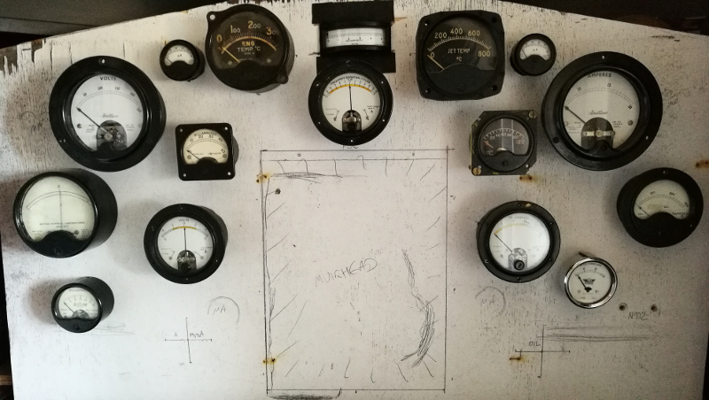I just happened to have an enormous roll of metallic "sticky-back paper", so I applied that to the plywood to create a fake metal panel for the gauges to sit on.
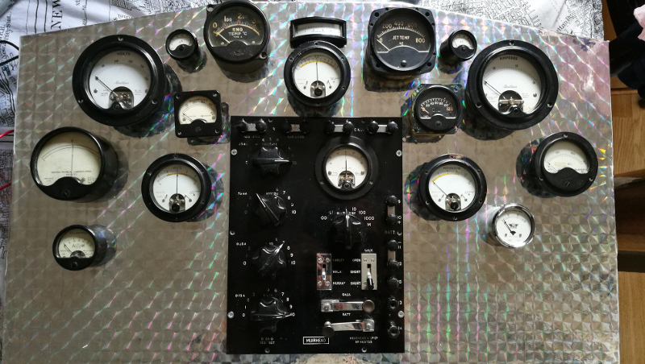I decided what to indicate with each gauge and Dymo'd some labels and wired it all up. To my astonishment, one Pi B was able to handle a dozen gauges, a physical switch and a bunch of LEDs simultaneously (as well as running MPD and Mercurial servers in the background).
The gauges and the code
- CPU and GPU temperatures (scaled to indicate max as 100C)
- CPU load (scaled to indicate max as 100%)
- RAM usage
- Network usage in and out
- VPN usage
- Disk usage
- Outside temperature
- The inevitable clock - using 2 gauges and 3 LEDs for over-engineering points
The basic principle for driving a moving coil gauge is to connect the postive and negative contacts to a GPIO pin (via a resistor) and ground respectively and then send a PWM signal via GPIO to move the needle. I used a Pi T-Cobbler to connect the Pi to a breadboard. At the first attempt I inserted each resistor between 2 female-ended dupont wires but the wiring became completely chaotic and kept snagging and breaking the connections.
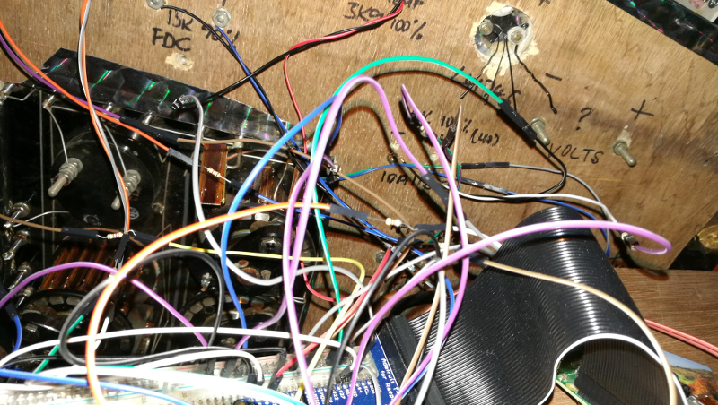 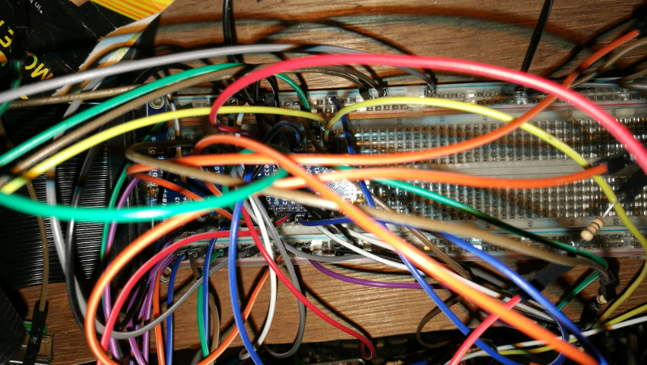My second attempt involved inserting the resistors directly onto the breadboard and using short M-M dupont wires to connect from the gauges' positive terminals to the GPIO pins. This allowed me to tidy up the wiring so that they would not cross (in theory) but the end result was still spaghetti.
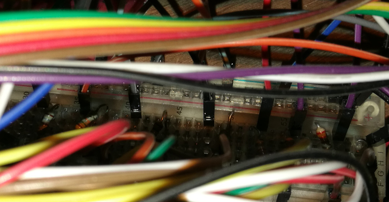 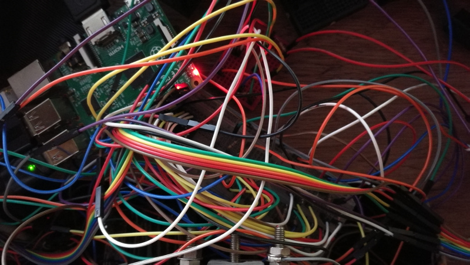On reflection, the wiring might be a little neater if I ran the resistors to the ground rail and went direct from the positive terminals to the GPIO pins. At the end of the day, I am using about 2 dozen pins, so tidyness might be an impossible goal.
The code behind it is a node.js script that connects to my desktop via SSH to query hardware stats. GPIO is handled with the wiring-pi module
var sh = require("child_process").spawnSync;
var wpi = require("wiring-pi");
wpi.wiringPiSetupGpio();
function sshCall(machine, command){
var host = machine.ip;
var user = machine.user;
try {
var returnValue =
sh(
"ssh",
[user + "@" + host, command]
).stdout.toString();
return returnValue;
} catch (e) {
return null;
}
}
function cpuLoad(machine) {
var cpuuse = 1;
try {
var cpu = sshCall(machine, "cat /proc/stat;sleep 1;cat /proc/stat");
if (!cpu) {return 0;}
cpu = cpu.split(/cpu /);
var cpuold = cpu[1].split(/ /).slice(0,4);
var cpunew = cpu[2].split(/ /).slice(0,4);
var user = +cpunew[0] - +cpuold[0];
var nice = +cpunew[1] - +cpuold[1];
var syst = +cpunew[2] - +cpuold[2];
var idle = +cpunew[3] - +cpuold[3];
cpuuse = idle / (user + nice + syst + idle);
} finally {
return (100 * (1 - cpuuse));
}
}
//...other stat collector routines...
var gauges = {
"CPUtemp": {
"pin": 22,
"scalemin": 0,
"scalemax": 100,//PWM value on GPIO that reaches max on the dial
"valuemax": 100,//maximum value expected for temperature
"gauge": "ENG TEMP",
"open": false
}
//...other pin definitions...
}
var allStats = {};
while (true) {//continually poll for stats
var machine = {name: "desktop", user: "me", ip: "192.168.10.10"};
allStats[machine.name] = {
"cpu": cpuLoad(machine),
"ram": memLoad(machine),
"hdd": diskFull(machine)
};
//...call other stat collectors.../
for (var stat in allStats[machine.name]) {
if (gauges[stat]) {
var pin = gauges[stat].pin;
var statValue = allStats[machine.name][stat];
if (statValue > gauges[stat].valuemax) {
statValue = gauges[stat].valuemax;
}
var pinValue = gauges[stat].scalemin
+ ((gauges[stat].scalemax
- gauges[stat].scalemin)
* (statValue / gauges[stat].valuemax));
if (!gauges[stat].open) {
wpi.softPwmCreate(pin, Math.round(pinValue), 100);
gauges[stat].open = true;
} else {
wpi.softPwmWrite(pin, ~~Math.round(pinValue));
}
}
}
}
Other stats are collected with equivalent ssh calls, using:
| Stat | ssh command |
|---|---|
| CPU LOAD | cat /proc/stat;sleep 1;cat /proc/stat |
| MEMORY | free |
| DISK USE | df | grep '/dev/sd' |
| CPU TEMP | sensors |
| GPU TEMP | nvidia-smi --query-gpu=temperature.gpu --format=csv,noheader |
| NET | ifstat -i eth2 1 4 |
| VPN | ifstat -i tun0 1 4 |
| TIME | date |
The script also pings the Weather Underground API every 30 minutes for local weather.
var lastTemp = 0;
var WUcallTime = 0;
function airTemp() {
if (new Date() - WUcallTime < (30*60*1e3)) {
return lastTemp;
}
WUcallTime = new Date();
console.log("Fetching from WU " + WUcallTime);
var conditions =
JSON.parse(
ss("wget -q -O-
http://api.wunderground.com/api/{key}/geolookup/conditions/q/IA/{location}.json"
).toString());
var timestamp = (new Date).toLocaleTimeString();
timestamp = (" " + timestamp + " ").slice(0, 16);
var weatherString = conditions.current_observation.weather;
while (weatherString.length < 16) {
weatherString = " " + weatherString + " ";
}
//weather conditions displayed on keyboard LCD (see below)
ss("wget -q -O- 'http://kbord.local/LCD?msg=" + timestamp + weatherString + "'");
console.log(conditions.current_observation.weather);
lastTemp = conditions.current_observation.temp_c;
console.log(lastTemp);
//return temperature to display on gauge
return lastTemp;
}
A possible redesign might be to make the node.js script a server that accepts requests to display values on each dial, rather than actively seeking them from one machine.
Switches and dials
So far, so good. We have lots of outputs updating in near real-time, but how about adding some input controls?
Something I have to do every time I work from home is connect to the VPN at work, so how about making a switch for this? Obviously it couldn't be any ordinary toggle switch, it had to be a missile switch with a flip cover
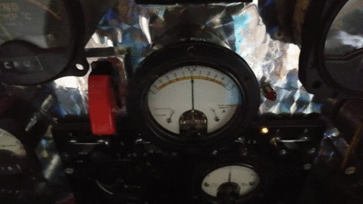Elsewhere on the panel I've added an illuminated toggle switch to switch off the privoxy server running on another Pi, through which my daughter's devices connect to the web. This enables me to make good on the almost daily threat: "If you don't brush your teeth, I'm turning the internet off".
The final (so far) input control was a good deal more complex. I wanted to use at least one of the rheostats on the Muirhead radio test set to control the volume of my sound card (despite having a dedicated volume control knob on my desk as well as volume buttons on one of my keyboards). I had some vague idea about the knobs varying resistance as measured with a multimeter, but I had run out of pins on my Pi and didn't really know how to approach it, so I put it on the back burner.
A few months later I was really into cheap Arduino clones, especially the ESP8266 variants, and stumbled upon this question in the Arduino forums. That gave me the confidence to try hooking up the Muirhead rheostat(s) to the analog pin on a NodeMCU using (what I think is) a voltage divider to translate resistance to voltage.
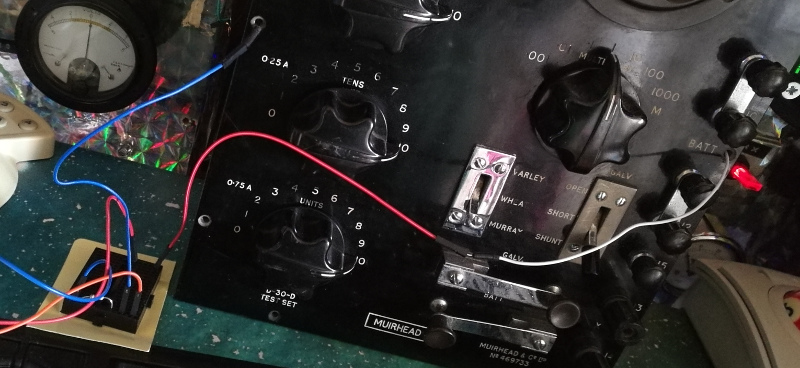It detects changes in the position of 2 of the rheostats and sends a request to the PC (via the Pi) to adjust its volume. One dial controls large volume adjustments and the other fine adjustments. This is of course completely pointless, I just wanted to see if it was possible and how to do it.
//Arduino code for NodeMCU reading the Muirhead rheostats
int muirhead;
int lastDialValue = 0;
void setVolume() {
Serial.println(muirhead);
Serial.println("http://192.168.1.83:8884/?value=" + (String)muirhead);
HTTPClient http;
http.begin("http://192.168.1.83:8884/?value=" + (String)muirhead);
int httpCode = http.GET();
Serial.println(httpCode);
}
void loop() {
muirhead = analogRead(A0);
if (abs(muirhead - lastDialValue) > 20) {
setVolume();
lastDialValue = muirhead;
}
}
//node.js code on the Pi that responds to requests from the NodeMCU
//and translates the parameter into a volume value to be set over ssh
function volumeLevel(dialValue) {
//the NodeMCU analog reading is from 0 to 1024 (in reverse order)
//7.3 is a scalar arrived at by trial and error
//to translate this to a suitable percentage
return Math.floor((1024 - dialValue) / 7.3);
}
var server = http.createServer(function (request, response) {
console.dir(request.url);
var value = url.parse(request.url, true).query.value;
if (value) {
console.log("setting volume " + value);
sshCall("pactl set-sink-volume 0 " + volumeLevel(value) + "%");
console.log("volume set");
}
response.writeHead(200, {'Content-Type': 'text/plain'});
response.end("OK");
});
Adding screens
By day I am a software tester and tend to use a lot of monitors. On my desk in the office, I have 4 monitors, plus 2 laptops and an iPad in constant use. I cannot replicate this at the same scale in the Tardis desk as it is not really even wide enough for 2 monitors.
I started to think what I could do about this, toying with the idea of using another Pi to drive some cheap Chinese LCD panel. I didn't want to break the symmetry of the desk, though, and was loathe to chance my luck with the expense and power demands of 2 panels but then I saw that the old Nokia 5110 screens could be re-purposed as Pi screens. This seemed like a suitably retro-modern addition to the desk, so I ordered 2. Wiring them up involved only my second bout of soldering in 30 years and the smell of melting lead and flesh brought back the memories of my work experience week at Marconi.
They are not difficult to solder, my only advice would be to decide whether the wires should approach from the front or the back of the screen panel BEFORE you start. There are 2 SPI channels available on a Pi, so I could run both screens from one Pi.

I use the screens to show the sender and subject of my latest emails. Work on the left and personal on the right. The software runs on the Pi, using the mail-notifier node.js module to poll 2 email accounts and a python script to update the screens. When a new email arrives, the Pi switches on the screen backlight and lights up an LED for 30 seconds, then blinks it for another 30 - in a usually vain attempt to get me to pay attention.
//node.js script to poll email and send updates to
//a local python server to update the Nokia screens
var sh = require("child_process").execSync;
var wpi = require("wiring-pi");
wpi.wiringPiSetupGpio();
var notifier = require('mail-notifier');
var now = new Date();
var yahooPin = 5;
var yahooBkl = 17;
var yahooScr = 1;
var workPin = 6;
var workBkl = 18;
var workScr = 0;
wpi.pinMode(yahooPin, wpi.OUTPUT);
wpi.digitalWrite(yahooPin, 0);
wpi.pinMode(workPin, wpi.OUTPUT);
wpi.digitalWrite(workPin, 0);
function lighton(pin) {
wpi.digitalWrite(pin, 1);
}
function blink(pin) {
wpi.digitalWrite(pin, 1 - wpi.digitalRead(pin));
}
var blinkers = {};
function blinker(pin) {
if (blinkers[pin]) {
clearInterval(blinkers[pin]);
}
blinkers[pin] = setInterval(blink, 1e3, pin);
}
function lightoff(pin) {
clearInterval(blinkers[pin]);
blinkers[pin] = null;
wpi.digitalWrite(pin, 0);//off
}
function mailLight(pin, bkl) {
lighton(pin);
setTimeout(blinker, 30e3, pin);
setTimeout(lightoff, 60e3, pin);
}
function cleanstring(str) {
return str.replace(/\W+/g, " ").replace(/("|')/g, "");
}
console.log(new Date() + " CONNECTING TO YAHOO");
var yahoo = {
user: "user@yahoo.com",
password: "password",
host: "imap.mail.yahoo.com",
port: 993, // imap port
tls: true,// use secure connection
tlsOptions: { rejectUnauthorized: false },
markSeen: false,
search: [ 'UNSEEN', ['SINCE', now] ]
};
var ny = notifier(yahoo)
.on('mail',function(mail){
console.log(mail.date);
console.log(mail.from);
console.log(mail.subject);
mailLight(yahooPin, yahooBkl);
sh("wget -q -O- 'http://localhost:7777/?screen=" + yahooScr
+ "&msg=" + cleanstring(mail.from[0].name.slice(0,15)) + " "
+ cleanstring(mail.subject) + "'");})
.on("connected", function () {
console.log(new Date() + " CONNECTED TO YAHOO");
})
.on("error", function (err) {
console.dir(err);
})
.start();
ny.on('end', function () { // session closed
console.log(new Date() + " RESTARTING CONNECTION TO YAHOO");
ny.start();
});
console.log(new Date() + " CONNECTING TO OUTLOOK");
var outlook = {
user: "user@outlook.com",
password: "password",
host: "outlook.office365.com",
port: 993, // imap port
tls: true,// use secure connection
tlsOptions: { rejectUnauthorized: false },
markSeen: false,
search: [ 'NEW' ]//[ 'UNSEEN', ['SINCE', now] ]
};
var lastWorkEmail = 0;
var newEmail;
var no = notifier(outlook)
.on('mail',function(mail){
newEmail = false;
console.log(mail.date);
if (new Date(mail.date) > lastWorkEmail) {
newEmail = true;
lastWorkEmail = new Date(mail.date);
}
console.log(mail.from);
console.log(mail.subject);
mailLight(workPin, workBkl);
sh("wget -q -O- 'http://localhost:7777/?screen=" + workScr
+ "&msg=" + cleanstring(mail.from[0].name.slice(0,15)) + " "
+ cleanstring(mail.subject) + "'");
})
.on("connected", function () {
console.log(new Date() + " CONNECTED TO OUTLOOK");
})
.start();
no.on('end', function () { // session closed
console.log(new Date() + " RESTARTING CONNECTION TO YAHOO");
no.start();
});
# respond to GET requests on port 7777 passing the msg parameter
# to the specified numbered screen
#!/usr/bin/env python
from BaseHTTPServer import BaseHTTPRequestHandler, HTTPServer
import urlparse
import SocketServer
class S(BaseHTTPRequestHandler):
def _set_headers(self):
self.send_response(200)
self.send_header('Content-type', 'text/plain')
self.end_headers()
def do_GET(self):
self._set_headers()
self.wfile.write("hi!")
if (self.path != '/favicon.ico'):
o = urlparse.urlparse(self.path)
print urlparse.parse_qs(o.query)
newtxt = urlparse.parse_qs(o.query)['msg'][0]
scr = int(urlparse.parse_qs(o.query)['screen'][0])
print scr
showText(newtxt, scr);
def do_HEAD(self):
self._set_headers()
def do_POST(self):
# Doesn't do anything with posted data
self._set_headers()
self.wfile.write("POST!")
def run(server_class=HTTPServer, handler_class=S, port=80):
server_address = ('', port)
httpd = server_class(server_address, handler_class)
print 'Starting httpd...'
httpd.serve_forever()
import time
import Adafruit_Nokia_LCD as LCD
import Adafruit_GPIO.SPI as SPI
from PIL import Image
from PIL import ImageDraw
from PIL import ImageFont
# Raspberry Pi software SPI config:
SCLK = [11, 21]
DIN = [10, 20]
DC = [23, 22]
RST = [24, 27]
CS = [8, 7]
BKL = [19, 17]
def showText(msg, screen):
# Software SPI usage (defaults to bit-bang SPI interface):
disp = LCD.PCD8544(DC[screen], RST[screen], SCLK[screen], DIN[screen], CS[screen])
# Initialize library.
disp.begin(contrast=60)
print msg
if (len(msg) < 16):
line = 15
margin = (15 - len(msg)) * 4
else:
line = 0
margin = 0
msgparts = [msg[i:i+16] for i in range(0, len(msg), 16)]
# Clear display.
disp.clear()
disp.display()
# Create blank image for drawing.
# Make sure to create image with mode '1' for 1-bit color.
image = Image.new('1', (LCD.LCDWIDTH, LCD.LCDHEIGHT))
# Get drawing object to draw on image.
draw = ImageDraw.Draw(image)
# Draw a white filled box to clear the image.
draw.rectangle((0,0,LCD.LCDWIDTH,LCD.LCDHEIGHT), outline=255, fill=255)
# Load default font.
# font = ImageFont.load_default()
# Alternatively load a TTF font.
# Some nice fonts to try: http://www.dafont.com/bitmap.php
# font = ImageFont.truetype('Minecraftia.ttf', 8)
font = ImageFont.truetype('/home/pi/fonts/pf_tempesta_seven.ttf', 8)
# Write some text.
for msgpart in msgparts:
draw.text((margin, line), msgpart, font=font)
line = line + 9
# Display image.
disp.image(image)
disp.display()
if __name__ == "__main__":
from sys import argv
if len(argv) == 2:
run(port=int(argv[1]))
else:
run()
Moar screens
Inevitably, this wasn't enough screen real estate, so I turned my attention to other useable equipment I had lying around. I dug up a Nook HD and a Nook HD+, both with cracked screens and 2 pre-flammable Samsung Galaxy Notes. The Nooks were attached to the frame of the Tardis overhead using gooseneck clamps and I screwed the Notes (not through the screens) to the 2 large gauges I wasn't using on the panel.
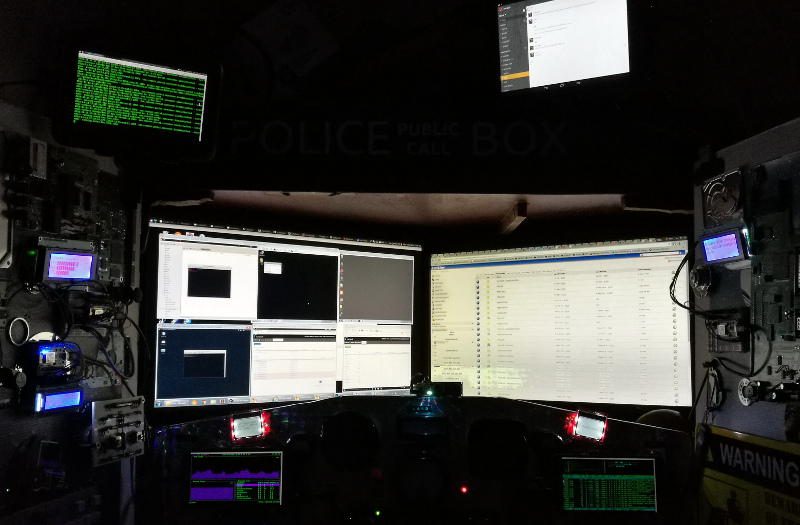Rather then having them exist as independent devices, I create 3 VNC sessions on my desktop and point the Nook HD and the 2 Notes to those sessions using native android clients. I use x2x to allow my keyboard and mouse to control those sessions when I hit the screen edges of my main desktop. When I log into my desktop, I run this bash script to enable VNC/x2x control:
#!/bin/bash
sudo killall Xvnc4
sudo killall x2x
sleep 5
#nook HD
vncserver -geometry 1420x768
sleep 5
x2x -west -to :1 &
#note 4
vncserver -geometry 1280x720
sleep 5
x2x -east -to :2 &
#note 2
vncserver -geometry 1280x720
sleep 5
x2x -south -to :3 &
Occasionally I run a synergy client on the (rooted) Nook HD+ to gain keyboard and mouse control but more often than not, it's simply used natively as an Android Slack client. These extra screens allow me to display things I need to keep an eye on, such as server logs when testing or the Pi (yes another one) camera in the lounge to make sure the cat and the dog are not tearing the place apart while I'm working upstairs.
Enter Arduino
When investigating Pi hardware projects, you often come across a dismissive comment along the lines of "Pfft, overkill, just use an Arduino!". My curiosity piqued, I treated myself to a birthday present of an Arduino Uno (clone) starter kit plus a bundle of sensors. Well, that opened a can of worms. This was my first ever Sunday delivery from Amazon so I was rather bleary-eyed at work on Monday, having been up till 3AM playing with it.
Included in the kit was a 1602 LCD display and while learning how to wire it up and drive it, I thought it would go nicely on one of the Tardis doors to provide even lower-level alerts, such as room temperatures (there were DHT-11 sensors in the kit) or the status of my Jenkins CI projects at work.
Having to keep the Arduino connected via USB was a pain and the wifi shields were inexcusably expensive, so I started to look for options with built-in wifi. I settled on the NodeMCU and the WiFi Witty Cloud (yes, seriously) as they were both Arduino IDE programmable, had GPIO pins and ESP8266 wifi and were cheap. Very, very, very cheap. So I ordered a few.
My first wifi-enabled mini-screen project was to be an international cricket score display. I hooked up a NodeMCU to the 1602 screen using a million dupont wires and attached a potentiometer to scroll through updates for each Test nation. The NodeMCU pings the cricinfo RSS page for international cricket scores, parses out the name and score for each team and reformats it for the display.
#include <ESP8266WiFi.h>
#include <LiquidCrystal.h>
#include <ESP8266HTTPClient.h>
#define HOSTNAME "nodeCricketer"
const char* ssid = "SSID";
const char* password = "PASSWORD";
unsigned long Timer;
unsigned long SleepTimer;
const String char16 = " ";
LiquidCrystal lcd(D2, D8, D4, D5, D6, D7);
//Define the pin connection for the rotary
int CLK = D3;
int DT = D1;
int SW = D0;
const int interrupt0 = 0;//
int count = 0;//Define the count
int lastCLK = 0;//CLK initial value
bool clicked = false;
String latestScores = "";
void setup() {
pinMode(SW, INPUT);
digitalWrite(SW, HIGH);
pinMode(CLK, INPUT);
pinMode(DT, INPUT);
//Set the interrupt 0 handler, trigger level change
attachInterrupt(interrupt0, ClockChanged, CHANGE);
Serial.begin (9600);
WiFi.mode(WIFI_STA);
WiFi.begin(ssid, password);
while (WiFi.waitForConnectResult() != WL_CONNECTED){
WiFi.begin(ssid, password);
Serial.println("Retrying connection...");
}
Serial.println("IP address: ");
Serial.println(WiFi.localIP());
Serial.println("Ready");
lcd.begin(16, 2);
lcd.print("NODE CRICKETER");
lcd.setCursor(0,1);
lcd.print(WiFi.localIP().toString());
getLatestScores();
}
String searchTitles(String searchWord) {
String searchString = latestScores;
String titles = "";
searchWord += " ";
int wordFound = searchString.indexOf(searchWord);
if (wordFound < 0) {
return "No " + searchWord + " score";
}
searchString = searchString.substring(wordFound, wordFound + 512);
Serial.println(searchString);
while (searchString.indexOf("<description>") > -1) {
int titleStart = searchString.indexOf("<description>");
int titleEnd = searchString.indexOf("</description>") + 14;
String searchTitle = searchString.substring(titleStart, titleEnd);
Serial.println(searchTitle);
if (searchTitle.indexOf(searchWord) > -1) {
Serial.println(searchTitle);
return searchTitle.substring(13, searchTitle.length() - 14);
}
searchString = searchString.substring(titleEnd);
}
return "No " + searchWord + " score";
}
String cleanScore(String fullScore) {
fullScore.replace(" ", " ");
fullScore.replace("amp;", "");
fullScore.replace("/10", "");
fullScore.replace(" *", "*");
fullScore.replace("England", "ENG");
fullScore.replace("Bangladesh", "BAN");
fullScore.replace("Afghanistan", "AFG");
fullScore.replace("United Arab Emirates", "UAE");
fullScore.replace("India", "IND");
fullScore.replace("Australia", "AUS");
fullScore.replace("New Zealand", "NZ");
fullScore.replace("South Africa", "RSA");
fullScore.replace("Pakistan", "PAK");
fullScore.replace("Sri Lanka", "SRI");
fullScore.replace("West Indies", "WI");
fullScore.replace("Zimbabwe", "ZIM");
fullScore.replace(" Women", "w");
fullScore.replace("Cricket ", "");
fullScore.replace(" XI", "xi");
return fullScore;
}
String teams[] = {"England", "Australia", "Bangladesh",
"India", "New Zealand", "Pakistan",
"South Africa", "Sri Lanka", "West Indies", "Zimbabwe"};
int teamIndex = 0;
void getLatestScores() {
Serial.println("Getting latest scores");
HTTPClient http;
http.begin("http://static.cricinfo.com/rss/livescores.xml");
int httpCode = http.GET();
Serial.println(httpCode);
if(httpCode > 0) {
if(httpCode == HTTP_CODE_OK) {
latestScores = http.getString();
}
}
getTeamScore(teams[teamIndex]);
}
void getTeamScore(String teamName) {
Serial.print("Getting score for ");
Serial.println(teamName);
String teamScore = searchTitles(teamName);
Timer = millis();
lcd.clear();
lcd.display();
lcd.setCursor(0,0);
teamScore = cleanScore(teamScore);
int versus = teamScore.indexOf(" v ");
lcd.print(teamScore.substring(0, versus));
if (teamScore.substring(0,3) != "No ") {
lcd.setCursor(0,1);
lcd.print(teamScore.substring(versus + 3));
}
}
void loop() {
if (!digitalRead(SW) && !clicked)
//Read the button press and the count value to 0 when the counter reset
{
clicked = true;
count = 0;
Serial.println("REFRESH");
getLatestScores();
}
}
void ClockChanged()
{
int clkValue = digitalRead(CLK);//Read the CLK pin level
int dtValue = digitalRead(DT);//Read the DT pin level
if (lastCLK != clkValue)
{
lastCLK = clkValue;
count += (clkValue != dtValue ? 1 : -1);//CLK and inconsistent DT + 1, otherwise - 1
if (count < 0) {
count = 40 + count;
}
if (count > 39) {
count = 0;
}
if (count % 4 == 0) {
teamIndex = count / 4;
getTeamScore(teams[teamIndex]);
}
clicked = false;
}
}
Occassionally the score parser gets confused and adds a regional team but I learnt not to try to do any heavy string processing on the NodeMCU as that is not really its forte. Ideally you should use an ESP8266 device to drive some hardware by being sent simple pre-formatted messages over HTTP and avoid any complicated local processing.
Next I thought about implementing some sort of menu system using these small LCD screens. I opted for the 2004 variant to provide more space for text. Given the number of pins tied up by the first screen, I also opted for I2C screens as they only require 5V, ground and 2 control pins, leaving more pins free for buttons, lights, etc.
So then I built a news ticker with a 2004 I2C screen showing story headlines from selected tech, science and cricket news sites. A couple of buttons were added to quickly scroll through site or stories (and just because I hadn't used any yet).
The news itself is aggregated by a Raspberry Pi and the headlines reformatted for display at 20x4. It runs a HTTP server that the NodeMCU can request the headlines from. This meets the principle of using the Pi for the heavy lifting and the NodeMCU for the display and input control.
The NodeMCU effectively becomes a wireless extension of the Pi's GPIO ports.
var feeds = [
"http://www.techrepublic.com/rssfeeds/articles/latest/",
"http://www.theregister.co.uk/headlines.atom",
"http://www.nasa.gov/rss/dyn/breaking_news.rss",
"http://www.sciencemag.org/rss/news_current.xml",
"http://www.thenakedscientists.com/rss/science_news.xml",
"http://makezine.com/feed/",
"http://www.espncricinfo.com/rss/content/story/feeds/0.xml",
"http://www.espncricinfo.com/rss/content/story/feeds/1.xml"
]
var feedindex = -1;
var storyindex = -1;
var stories = [];
var feedread = require("feed-read");
var http = require("http");
var char80 = (new Array(80)).join("#");
function storyFormatter(story) {
//slice the story up so that words are not broken on each row
var formattedStory = "";
story = story.replace(/[^A-Za-z0-9 ,\.\-]/g, "");
story = (story + char80).slice(0,80);
function respacer() {
storySlice = storySlice.slice(0, 21);
if (storySlice.match(/ /)) {
while ((storySlice.slice(19, 20) != " ")
&&
(storySlice.slice(20, 21) != " ")) {
storySlice = storySlice.replace(/ ([^ ]+)$/, " $1");
}
}
}
var storySlice = story;
respacer();
formattedStory += storySlice.slice(0, 20);
storySlice = storySlice.slice(20);
if (storySlice.slice(0, 1) == " ") {
storySlice = storySlice.slice(1);
}
storySlice += story.slice(21, 41);
var slug = storySlice.slice(21);
respacer();
formattedStory += storySlice.slice(0, 20);
storySlice = storySlice.slice(20) + slug;
if (storySlice.slice(0, 1) == " ") {
storySlice = storySlice.slice(1);
}
storySlice += story.slice(41, 61);
slug = storySlice.slice(21);
respacer();
formattedStory += storySlice.slice(0, 20);
storySlice = storySlice.slice(20) + slug;
storySlice += story.slice(61, 81);
formattedStory += storySlice;
return formattedStory.replace(/#/g, " ");
}
var feedserver = http.createServer(function (req, res) {
if (req.url.match(/topic/i)) {
feedindex++;
if (feedindex == feeds.length) {
feedindex = 0;
}
var feed = feeds[feedindex];
stories = [];
storyindex = -1;
feedread(feed, function(err, articles) {
articles.forEach(function (article, i) {
if (i < 10) {
stories.push(storyFormatter(article.title));
}
});
res.writeHead(200, {'Content-Type': 'text/plain'});
res.end(articles[0].feed.name.replace(/ | /, ""));
});
}
if (req.url.match(/story/i)) {
storyindex++;
res.writeHead(200, {'Content-Type': 'text/plain'});
if (storyindex >= stories.length) {
res.end("END");
}
res.end(stories[storyindex]);
}
});
feedserver.listen(8989);
#include <ESP8266WiFi.h>
#include <ESP8266HTTPClient.h>
#include <LiquidCrystal_I2C.h>
LiquidCrystal_I2C lcd(0x27, 20, 4);
#define HOSTNAME "NODE2004NEWSTICKER"
const char* ssid = "SSID";
const char* password = "password";
const int TOPIC = D3;
const int STORY = D4;
const String topicURL = "http://192.168.1.82:8989/topic";
const String storyURL = "http://192.168.1.82:8989/story";
String char10 = " ";
String char20 = char10 + char10;
String char40 = char20 + char20;
String char80 = char40 + char40;
void getTopic() {
Serial.print("TOPIC ");
HTTPClient http;
http.begin(topicURL);
int httpCode = http.GET();
Serial.println(httpCode);
if(httpCode > 0) {
if(httpCode == HTTP_CODE_OK) {
Serial.println("FETCHED");
lcdprint(char20 + http.getString());
} else {
lcdprint("PROBLEM WITH FEED");
}
}
}
void getStory() {
Serial.print("STORY ");
HTTPClient http;
http.begin(storyURL);
int httpCode = http.GET();
Serial.println(httpCode);
if(httpCode > 0) {
if(httpCode == HTTP_CODE_OK) {
Serial.println("FETCHED");
lcdprint(http.getString());
} else {
lcdprint("PROBLEM WITH STORY");
}
}
}
void lcdprint(String story) {
if (story == "END") {
getTopic();
return;
}
lcd.clear();
story = (story + char80).substring(0,80);
lcd.setCursor(0,0);
lcd.print(story.substring(0,20));
lcd.setCursor(0,1);
lcd.print(story.substring(20,40));
lcd.setCursor(0,2);
lcd.print(story.substring(40,60));
lcd.setCursor(0,3);
lcd.print(story.substring(60));
}
void setup() {
Serial.begin(115200);
delay(10);
pinMode(TOPIC, INPUT);
pinMode(STORY, INPUT);
// Connect to WiFi network
Serial.println("Connecting to ");
Serial.println(ssid);
WiFi.begin(ssid, password);
while (WiFi.status() != WL_CONNECTED) {
delay(500);
}
Serial.println("WiFi connected");
// Print the IP address
Serial.println(WiFi.localIP());
lcd.begin(20,4);
lcd.init();
lcd.backlight();
// Move the cursor characters to the right and
// zero characters down (line 1).
lcd.setCursor(3, 0);
lcd.print(WiFi.localIP());
lcd.setCursor(4, 2);
lcd.print("NEWS TICKER");
getTopic();
}
int clickTime;
void loop() {
if (digitalRead(TOPIC) == LOW) {
Serial.println("CLICKED TOPIC");
getTopic();
while(digitalRead(TOPIC) == LOW) {
delay(100);
}
clickTime = millis();
}
if (digitalRead(STORY) == LOW) {
Serial.println("CLICKED STORY");
getStory();
while(digitalRead(STORY) == LOW) {
delay(100);
}
clickTime = millis();
}
if (millis() - clickTime > 7000) {
Serial.println("TIMER FIRED");
getStory();
clickTime = millis();
}
}
The 3rd NodeMCU-attached display uses a 2004 I2C again but adds an analog thumbstick (the analog aspect is irrelevant but, again, learning) to control a rudimentary menu system. I use the stick's horizontal axis to control menu selection and vertical axis with click to select menu items. At the moment I can choose to see temperature, RH and light level in 3 rooms where I have sensors or status reports from the Jenkins CI system at work.
Using an analog stick (because that was what came in the sensor kit) complicated matters because the NodeMCU only has one analog port. I decided to over-engineer a solution by incorporating an MCP3008 ADC, which can translate up to 8 analog inputs to digital signals. I only needed 2 analog channels (one for each joystick axis) but I decided to use a spare channel for my Muirhead volume control mentioned above, freeing up the NodeMCU previously dedicated to that task.
You can define custom characters for the LCD displays. I created a half-block so temperatures could be displayed as bar charts. One complete block is 2 degrees C. "O" characters appear at 10 and 20C (and 30 if that ever happens).
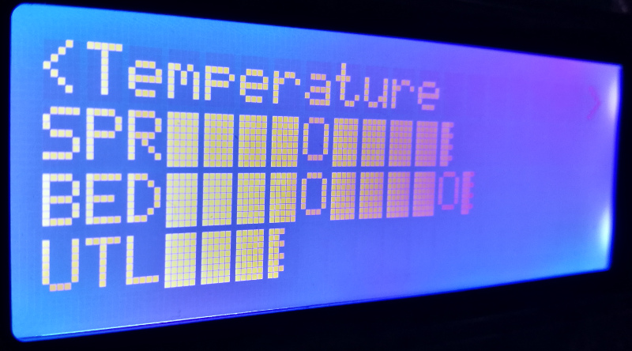I have DHT-11 and light sensors attached to NodeMCUs and WiFi Witty Cloud boards in 3 rooms in the house. They all run similar http server code, responding to GET requests with the latest readings.
#include
#include
ESP8266WebServer server(80);
#define HOSTNAME "WittyLight"
const char* ssid = "SSID";
const char* password = "password";
const int LDR = A0;//light sensor
int LDRvalue = 0;
#include
int pinDHT11 = 14;
SimpleDHT11 dht11;
void setup() {
Serial.begin (9600);
pinMode(LDR, INPUT);
WiFi.mode(WIFI_STA);
WiFi.begin(ssid, password);
while (WiFi.waitForConnectResult() != WL_CONNECTED){
WiFi.begin(ssid, password);
Serial.println("Retrying connection...");
}
server.begin();
Serial.println("Server started");
Serial.println("IP address: ");
Serial.println(WiFi.localIP());
Serial.println("Ready");
server.on("/LL", sendLightLevel);
server.on("/TEMP", sendTEMP);
}
void sendTEMP() {
byte temperature = 0;
byte humidity = 0;
byte data[40] = {0};
if (dht11.read(pinDHT11, &temperature, &humidity, data)) {
server.send(400, "text/plain", "Error");
return;
}
Serial.print((int)temperature); Serial.print(" *C, ");
Serial.print((int)humidity); Serial.println(" %");
server.send(200, "text/plain", (String)temperature + "," + (String)humidity);
}
void sendLightLevel() {
String LLvalue = (String)analogRead(LDR);
Serial.println(LLvalue);
server.send(200, "text/plain", LLvalue);
Serial.println("SENT");
}
void loop() {
server.handleClient();
}
The Jenkins page in the menu uses the separation of responsibilities idea again. The code to poll Jenkins for the latest job status actually runs on my desktop and the NodeMCU just pings it for formatted data and displays it on the screen.
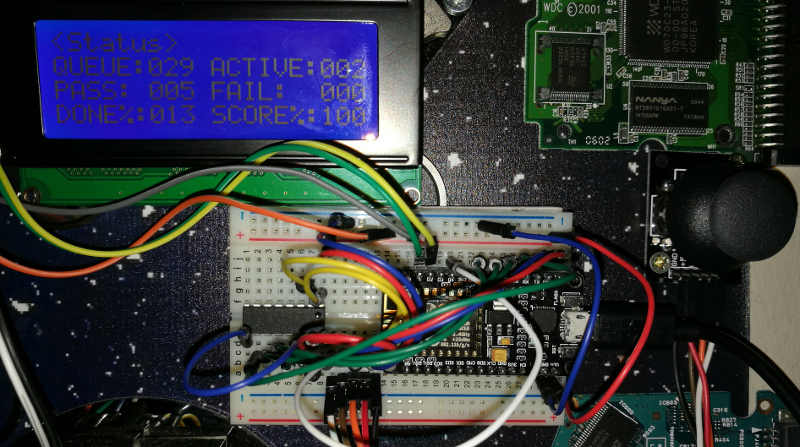Enhancing a keyboard
My Corsair K65 is a perfectly fine mechanical keyboard but I did shoot myself in the foot somewhat by replacing all the letter keys with blank keycaps. Although I have been using keyboards regularly for more than 3 decades, I am by no means a touch typist. I can cope quite well with general typing but I need to use a lot of passwords for work and with blank keycaps combined with no visual feedback when typing becomes quite annoying.
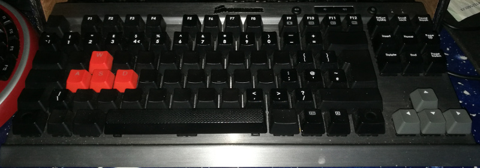Just before Xmas I spotted some Cherry G81-7000 retail keyboards on eBay. They had built in card-readers and programmable keys. I thought "they are mechanical keyboards, how bad can they be to type on?" Actually pretty terrible. They don't feel mechanical at all but for £5 it will do. I stripped out the card-reader and added a NodeMCU wired to 2 small displays - one LED and one LCD - and added 3 leds for visual flair. I also replaced some keys with spare blank black keycaps for extra edginess. The whole thing needed a good clean as every keycap had years of grime caked on. I removed this with the harshest cleaning product known to man - baby wipes. Pulling all the keycaps also revealed a number of clothes tags and paper-clips stuck under several keys. After that the typing experience improved but still not great.
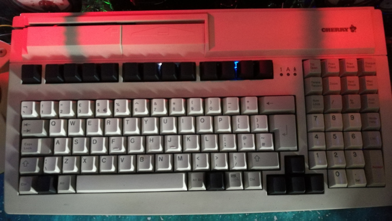The NodeMCU in the keyboard accepts HTTP GET requests with paths for each display and a parameter for the message.
#include <ESP8266WiFi.h>
#include <ESP8266WebServer.h>
ESP8266WebServer server(80);
#define HOSTNAME "KBORD"
const char* ssid = "SSID";
const char* password = "password";
#include "LedControl.h"
LedControl lc=LedControl(D8,D7,D6,1);
#include <Wire.h>
#include <LiquidCrystal_I2C.h>
LiquidCrystal_I2C lcd(0x3F,16,2);
const String char16 = " ";
//led character definitions
const byte SevenSegChar[101] = {0x00, // SPACE
0xA0, // !
0x22, // "
0x36, // #
0x4B, // $
0x5A, // %
0x6F, // &
0x02, // '
0x4E, // (
0x78, // )
0x63, // *
0x07, // +
0x18, // ,
0x01, // -
0x80, // .
0x25, // /
0x7E, // 0
0x30, // 1
0x6D, // 2
0x79, // 3
0x33, // 4
0x5B, // 5
0x5F, // 6
0x70, // 7
0x7F, // 8
0x7B, // 9
0x09, // :
0x19, // ;
0x43, // <
0x41, // =
0x61, // >
0x65, // ?
0x7D, // @
0x77, // A
0x1F, // B
0x4E, // C
0x3D, // D
0x4F, // E
0x47, // F
0x5E, // G
0x37, // H
0x30, // I
0x38, // J
0x57, // K
0x0E, // L
0x54, // M
0x76, // N
0x7E, // O
0x67, // P
0x73, // Q
0x66, // R
0x5B, // S
0x0F, // T
0x3E, // U
0x3A, // V
0x2A, // W
0x37, // X
0x3B, // Y
0x69, // Z
0x4E, // [
0x13, // |
0x78, // ]
0x62, // ^
0x08, // _
0x02, // '
0x77, // a
0x1F, // b
0x4E, // c
0x3D, // d
0x4F, // e
0x47, // f
0x5E, // g
0x37, // h
0x30, // i
0x38, // j
0x57, // k
0x0E, // l
0x54, // m
0x76, // n
0x7E, // o
0x67, // p
0x73, // q
0x66, // r
0x5B, // s
0x0F, // t
0x3E, // u
0x3A, // v
0x2A, // w
0x37, // x
0x3B, // y
0x69}; // z
void setup() {
Serial.begin (9600);
// Initialize the MAX7219 device
lc.shutdown(0,false); // Enable display
lc.setIntensity(0,8); // Set brightness level (0 is min, 15 is max)
lc.clearDisplay(0); // Clear display register
lcd.begin(16,2);
lcd.init();
lcd.backlight();
lcd.setCursor(2,0);
lcd.print("kBord Active");
WiFi.mode(WIFI_STA);
WiFi.begin(ssid, password);
while (WiFi.waitForConnectResult() != WL_CONNECTED){
WiFi.begin(ssid, password);
Serial.println("Retrying connection...");
}
server.begin();
Serial.println("Server started");
Serial.println("IP address: ");
Serial.println(WiFi.localIP());
lcd.setCursor(2,1);
lcd.print(WiFi.localIP());
Serial.println("Ready");
server.on("/LCD", writeLCD);
server.on("/LED", writeLED);
server.on("/counter", enableCounter);
server.on("/stopCounter", disableCounter);
server.on("/startCounter", startCounter);
}
void writeLCD() {
String message = server.arg("msg") + char16 + char16;
lcd.setCursor(0,0);
lcd.print(message.substring(0, 16));
lcd.setCursor(0,1);
lcd.print(message.substring(16, 32));
server.send(200, "");
}
bool counteron = false;
void enableCounter() {
counteron = true;
server.send(200, "");
}
void disableCounter() {
counteron = false;
server.send(200, "");
}
long counterStart = 0;
void startCounter() {
counteron = false;
counterStart = millis();
enableCounter();
}
void writeCounter() {
String message = (String)((millis() - counterStart) / 100);
while(message.length() < 8) {
message = " " + message;
}
char ledBuffer[9];
String response = "";
message.toCharArray(ledBuffer, 9);
lc.clearDisplay(0);
for (int i = 0; i < 8; i++) {
lc.setChar(0, 7-i, ledBuffer[i], (bool)(i == 6));
}
}
void writeLED() {
disableCounter();
String message = server.arg("msg");
char ledBuffer[9];
String response = "";
message.toCharArray(ledBuffer, 9);
lc.clearDisplay(0);
for (int i = 0; i < 8; i++) {
lc.spiTransfer(0, 8-i, SevenSegChar[ledBuffer[i] - 32]);
}
server.send(200, "");
}
void loop() {
server.handleClient();
if (counteron) {
writeCounter();
delay(100);
}
}
The Pi running the instrument panel sends the keyboard LCD periodic weather updates and displays today's date every hour on the LED. The LED can also show a minute and second counter which can be started and stopped via HTTP.
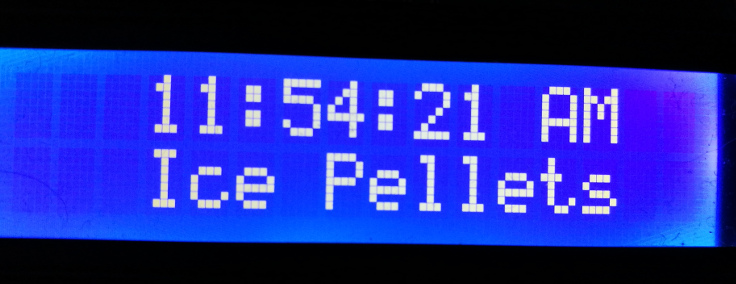Getting Exercised
A few months ago I developed a form of vertigo that leaves me almost completely intolerant of any kind of transport. While waiting what seems like forever for a proper diagnosis and treatment, my employers have been kind enough to allow me to work from home. My desk helps me to work efficiently and stay in contact with the team, but even though I avoid sitting all day, being virtually housebound is causing health problems. During the course of 2016 I managed to lose 10 kilos in weight over 6 months through careful eating and regular low impact exercise. Having lost most of my access to exercise, I have regained 5 kilos, so I needed to find a way around this.
My condition is completely unpredictable and some days I can walk round the block without any problems, other days I cannot make it to the end of the road. I decided to get an exercise bike, nothing fancy, just one that could sit in front of my desk that I could use sitting on a stool. I ordered one for £30 to see how I got on with it. It came with a small computer showing me RPM, elapsed time, equivalent road speed and calories burnt. It was laughably inaccurate, so I decided to replace it. It is designed to be detached easily (no idea why) and on closer inspection, it is just a hall effect sensor used to time the revolutions of a magnet embedded in the wheel. As luck would have it, the Arduino sensor kit included a couple of hall sensors, so it was an easy and elegant swap out to replace the original computer with a NodeMCU.
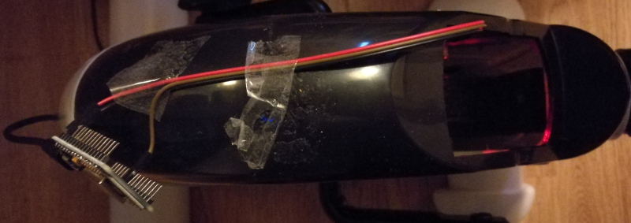I run a routine on it to time the usage and rpm speed of the bike and transmit the details to the small screens on the keyboard. The elapsed time in minutes and seconds shows on the LED and the spin count and rpm speed on the LCD. All stats are transmitted to my desktop for storage and are reset after the bike is unused for 5 seconds.
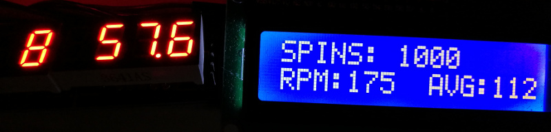
#include <ESP8266WiFi.h>
#include <ESP8266HTTPClient.h>
int wheelPin = D6;
int val;
long lastTime;
long diffms;
int rpm;
int avg;
bool quit;
long session;
long spinCount;
const String char8 = " ";
#define HOSTNAME "NODEBIKE"
const char* ssid = "SSID";
const char* password = "password";
void setup()
{
Serial.begin(9600);
pinMode(wheelPin, INPUT);
lastTime = millis();
quit = false;
spinCount = 0;
session = 0;
// Connect to WiFi network
Serial.print("Connecting to ");
Serial.print(ssid);
WiFi.begin(ssid, password);
while (WiFi.status() != WL_CONNECTED) {
delay(500);
Serial.print(".");
}
Serial.print("");
Serial.print("WiFi connected");
Serial.println("IP address: ");
Serial.println(WiFi.localIP());
}
void startCounter() {
HTTPClient http;//start keyboard LED timer
http.begin("http://192.168.1.22/startCounter");
int httpCode = http.GET();
http.end();
}
void startVideo() {
HTTPClient http;
http.begin("http://192.168.1.73:8888/play");
int httpCode = http.GET();
Serial.println("VIDEO");
http.end();
}
void startSession() {
session = millis();
startCounter();
startVideo();
}
void updateKbord() {
HTTPClient http;
String spinMsg = "SPINS:%20" + (String)spinCount;
int spinLen = spinMsg.length() -2;
while (spinLen < 16) {
spinMsg += "%20";
spinLen++;
}
String rpmMsg = "RPM:" + (String)rpm;
if (rpm < 100) {
rpmMsg += "%20";
}
avg = 60000 * spinCount / (lastTime - session);
String avgMsg = "%20%20AVG:" + (String)avg;
String bikeMsg = spinMsg + rpmMsg + avgMsg;
http.begin("http://192.168.1.22/LCD?msg=" + bikeMsg);
int httpCode = http.GET();
http.end();
}
void updateSession() {
rpm = 60000 / diffms;
spinCount++;
updateKbord();
}
void stopVideo() {
HTTPClient http;
http.begin("http://192.168.1.73:8888/kill");
int httpCode = http.GET();
http.end();
}
void writeLog() {
HTTPClient http;
http.begin("http://192.168.1.73:8888/log?time="
+ (String)session + "&spinCount=" + (String)spinCount);
int httpCode = http.GET();
http.end();
}
void endSession() {
HTTPClient http;
http.begin("http://192.168.1.22/stopCounter");
int httpCode = http.GET();
http.end();
session = (lastTime - session) / 1000;
stopVideo();
writeLog();
spinCount = 0;
session = 0;
quit = true;
}
void loop() {
val = digitalRead(wheelPin);
if (val == HIGH) {
quit = false;
if (session == 0) {
startSession();
}
diffms = millis() - lastTime;
if (diffms > 100) {
updateSession();
}
lastTime = millis();
}
if (!quit) {
if (millis() - lastTime > 5000) {
endSession();
}
}
}
The timings are started as soon as the pedals are turned once. The bike also sends a request to my desktop to start playing a POV bike video on YouTube to stop me from getting bored. I use the tv# interface to YouTube so it starts full-screen and can be controlled easily with the cursor keys. I may stick with the tv# interface for general viewing as videos seem to start faster and best of all there is no comments section.
I did a bit of initial searching to find a couple of dozen videos that are choosen (at random) but related videos can be selected while the bike is running. If a session lasts longer than 100 spins, it is logged so that I can partake in the current trend of obssessively gathering ultimately meaningless stats about my exercise regime.
const http = require("http");
const url = require("url");
const fs = require("fs");
const exec = require('child_process').exec;
const execSync = require('child_process').execSync;
var vlc = null;
var rides = [
"DGlmmndVkVg", "vllgc9oKjqA", "tEgosOCTiZU", "HAzWivQ6v7I",
"_HqhC5OxVko", "uVq9UvLWfog", "fIRMNAP1WOU", "qoYTDv85fDA",
"a5vTA4L_PB4", "XDzt7FN3gJo", "32bsOn4H2QY", "BaLbA6ZFVLI",
"IWqpooKNZaI", "7o2YxaYC9jo", "nWAcONyRTkg", "6KrJW2KJM1Y",
"5mD3yJ60mrk", "J_GEBm78JvY", "04lFS_5YVpQ", "iknNz7uTwf8",
"vX4Ktnec3C8", "v03XIh5UcD8", "bTwpV_Ad2HQ", "37TJ6Nv4Dcs",
"2zub_Wamfi0", "Swvfr-AMjLU", "HseQVMsDWKc",
];
http.createServer(function (request, response) {
var action = "KILLING";
var params = url.parse(request.url, true);
if (vlc && request.url.match(/kill/)) {
try {
execSync("killall chrome");
} catch (e) {
console.log("NO CHROME TO KILL");
}
vlc.kill("SIGHUP");
}
if (request.url.match(/play/)) {
var ride = Math.floor(Math.random() * rides.length);
if (vlc && vlc.pid) {
try {
execSync("killall chrome");
} catch (e) {
console.log("NO CHROME TO KILL");
}
}
vlc && vlc.kill("SIGHUP");
vlc = exec("google-chrome --start-fullscreen 'https://www.youtube.com/tv#/watch?v=" + rides[ride] + "'");
action = "PLAYING";
}
if (request.url.match(/log/)) {
action = "LOGGING";
if (+params.query["spinCount"] > 100) {
fs.appendFileSync("/home/nick/Arduino/nodes/bikeLog.txt",
Date.now() + ","
+ params.query["time"]
+ "," + params.query["spinCount"] + "\n");
}
}
console.log(action);
response.writeHead(200, {"Content-Type": "text/plain"});
response.end(action);
}).listen(8888);
The complete desk:
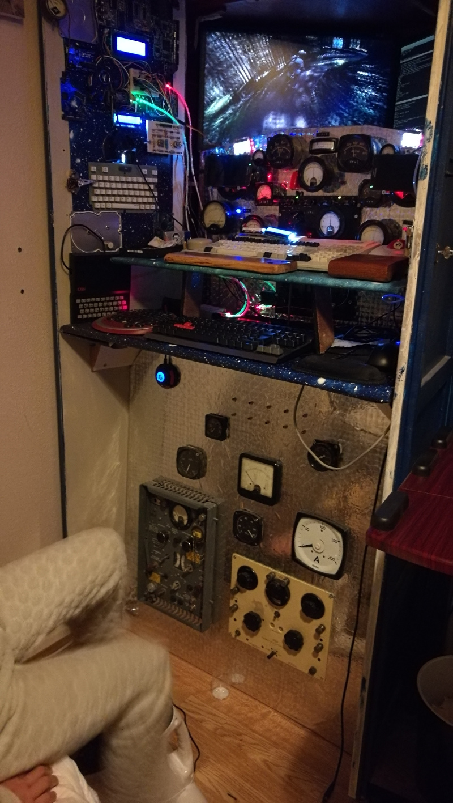